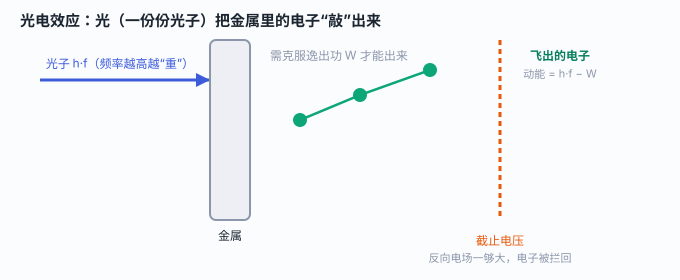

一、一个让旧理论“卡壳”的实验
19 世纪末，物理学家发现：用光照射某些金属，表面会“溅出”电子，这叫光电效应。起初大家以为，光是波，能量连续分布——那只要把光调得更亮（能量更大），就一定能打出更多、更快的电子，对吧？
实验结果啪啪打脸：① 能不能打出电子，只看光的颜色（频率），和亮不亮没关系；② 低于某个特定频率，光再亮也一个电子都打不出来；③ 一旦能打出，电子立刻飞出，没有延迟。这些用“光是连续波”的旧观念完全解释不了。
二、经典理论的尴尬
如果光只是波，能量就摊在一大片区域上。电子要“攒够”能量才能挣脱金属，亮光应该迟早能把它推出来——可实验里根本不出电子，而且一照就出、毫无延迟。这说明能量不是“慢慢攒”的，而是“一下到位”的。
问题卡在这儿：能量到底是怎么“一下到位”的？普朗克此前已提出，振子的能量是一份份的（量子）。爱因斯坦大胆地把这个想法用到光本身上。
三、爱因斯坦的妙招：光，是一份份的
1905 年，爱因斯坦提出：光本身就是一份一份的，每一份叫一个光子，能量只由频率决定：E = h·f（h 是普朗克常数，f 是频率）。频率越高（颜色越偏蓝紫），单个光子“越重”、能量越大。

这样一切都顺了：一个光子把它的全部能量交给一个电子。电子要先“付”掉逸出功 W（金属对它的束缚），剩下的才变成自己的动能。于是有了爱因斯坦方程：
四、两个关键门槛
从方程能直接看出两个事实：
- 截止频率 f₀：只有当 h·f > W，即频率高于某个值，才能打出电子。低于它，光再亮也白搭——这正好解释了“亮光打不出电子”的怪事。
- 截止电压：给飞出的电子加一个反向电场，能把它“压”回去。把电流刚好压到零所需的电压叫截止电压，它直接对应电子的最大动能。实验测出来的数值，和方程算得分毫不差。
五、诺贝尔奖，却不是因为相对论
有趣的是，爱因斯坦 1921 年的诺贝尔物理学奖，获奖理由写的是“对光电效应定律的发现”，而不是更出名的相对论——因为当时相对论仍有争议，而光电效应已被实验牢牢证实。
但光电效应的意义远不止一个实验现象：它让“量子”从普朗克的假设，变成了理解光的真实方式，直接催生了量子力学。今天，太阳能电池、光电管、夜视仪，背后都是这个 1905 年的想法。
一句话记住：光既是波也是粒子；能不能打出电子看“颜色”（频率），不是看“亮度”。